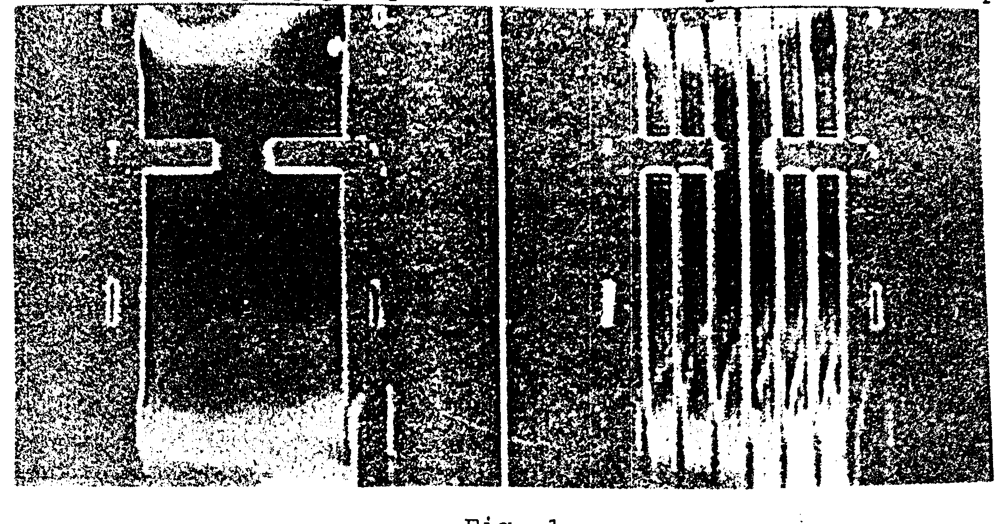

A Simple Method to Produce Sharp Multiple Slice Irradiation.
Tagging by multiple stripes or a grid has been used for looking at heart wall motion (1,2). It has also been used for flow imaging by bolus tracking (3) and mapping flow streamlines (4). The method is adaptable to most imaging sequences by the addition of saturating radio frequency (rf) pre-pulses for tagging and it is attractive because motion is mapped by the displacement of stripes on standard magnitude images.
Several different approaches have been used for tagging; by radial stripes (1), 1-3-3-1 or 1-4-6-4-1 pulses (2), DANTE pulses (5), and modification of sine pulses (3,4). In this letter we show how any selective rf irradiation can be replicated in the frequency domain so that it becomes a multiple selective excitation.
If S(t) is a selective rf pulse then we construct the striping pulse R(t) by zeroing S(t) over regularly spaced intervals. Thus
R(t) = S(t), for kt - A £ t £ kt + A, for all k
0, otherwise.
The function R(t) can be constructed easily from the digital form of S(t) by skipping points at regular intervals. If we define a function f(t) = 1 for |t| £ A and zero otherwise, then
R(t) = S(t) S f(t + kT).
The Fourier transform of R(t) is a given by
R(w ) = F(w ) S S(w + 2p k/T),
where F(w ) and S(w ) are Fourier transforms of f(t) and S(t) respectively. The small tip angle approximation gives the slice profile excited by R(t) to be R(w ), with w = g Gx , where G is the magnetic field gradient applied during the rf pulse. The distance between the stripes is given by Xs=2p /(g GT). The profile of each stripe is determined by S(w ), while F(w ) = 2Asin(w A)/( w A) modulates the periodic striping function S S(w + 2p k/T). The region of effective stripes is limited by the shape of F(w ). The shape of each stripe is S(w ) which is determined by S(t). The sharpest stripe we have used is with S(t) = sin(at)/at.
An example of stripes in a water filled pipe with 2.54 cm i.d. and a 8 mm circular orifice is shown in Fig. 1. We have used S(t) = sin(at)/at, for t £ L, and a = 5p /L, where L = 8192 m s. This pulse was sampled 256 times to give a dwell time per sample to be 64 m s (º 2A) and 5 points were skipped to give T = 320 m s. The gradient was adjusted to give a stripe separation of 5 mm and the frequency offset of the rf pulse adjusted to place one stripe through the center of the orifice. The image on the left is without the striping pre-pulse and on the right with the stripes.

Fig. 1
REFERENCES
1.Zerhouni E., Parrish D., Rodgers WJ., Yang A., and E. P. Shapiro. Radiology 169:59-64, 1988
Axel L. and L. Dougherty. Radiology 172:349-350,1989
Kraft, K.A., S.J. Cothran, D.Y. Fei, and P.P. Fatouras . Abstracts of 10th Annual Meeting of SMRM, 835, 1991.
Icenogle, M.V., A. Caprihan, and E. Fukushima. Abstracts of 10th Annual Meeting of SMRM, 814, 1991.
Mosher, T.J. and M.B. Smith. Magn. Reson. Med. 15, 334-339, 1990.
A. Caprihan E. Fukushima P. D. Majors